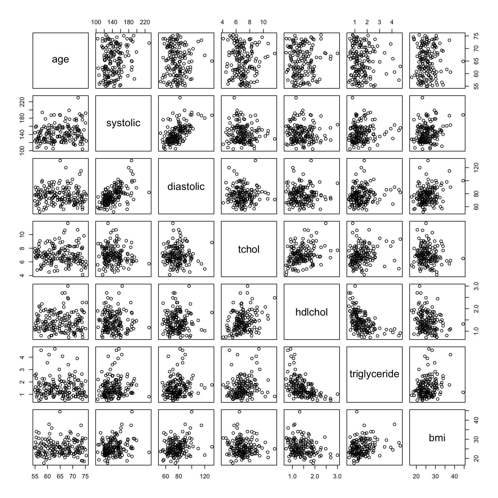
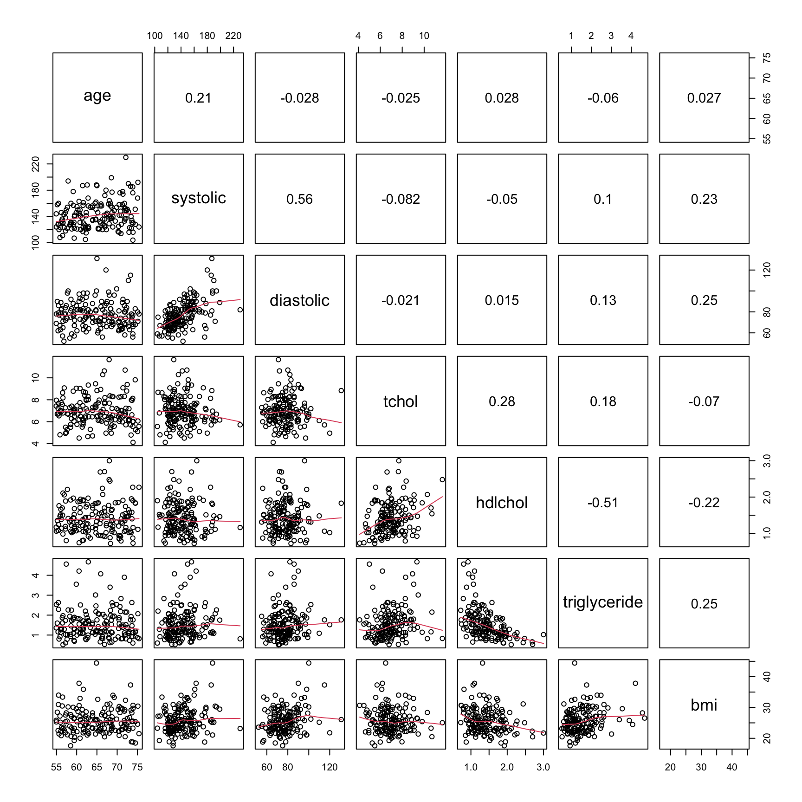

Exercises
Exercise 5: Exploratory analysis and graphics
Read Chapter 4 to help you complete the questions in this exercise.
1. As in previous exercises, either create a new R script or continue
with your previous R script in your RStudio Project. Again, make sure
you include any metadata you feel is appropriate (title, description of
task, date of creation etc) and don’t forget to comment out your
metadata with a # at the beginning of the line.
2. You do not need to download anything for this exercise. You
already have ‘cardiacdata.txt’ in the data
directory of your RStudio Project, from Exercise 3. If for some reason
you haven’t, go back to the Data link,
download ‘cardiacdata.xlsx’ and save it as a tab delimited file
called ‘cardiacdata.txt’ as you did before.
3. A quick reminder of what these data are. They come from a cohort study of the risk factors for cardiovascular disease, in which 163 adults aged between 55 and 75 were examined and a range of measurements taken: age and sex, systolic and diastolic blood pressure (mmHg), body mass index (kg m-2), total cholesterol, HDL cholesterol and triglyceride (all mmol l-1), units of alcohol drunk in the previous week, and smoking status. Note that you are importing the original file again, not the cleaned version you exported at the end of Exercise 4. Starting from the raw data every time, and doing your cleaning in a script, is what makes an analysis reproducible.
4. Import the ‘cardiacdata.txt’ file into R using the
read.table() function and assign it to a variable named
cardiac. Use the str() function to display the
structure of the dataset. As you found in Exercise 3, the
sex and smoking variables are coded as
integers, but they are really categories. Create a new variable in the
cardiac dataframe for each of them, recoded as a factor
with meaningful labels (sex is 1 for Female and 2 for Male;
smoking is 1 for Current, 2 for Ex and 3 for Never). Use
the str() function again to check the coding of these new
variables. Almost every plotting function in this exercise treats a
factor differently from a number, so this step is not optional
housekeeping - get it wrong and your boxplots will come out as
nonsense.
cardiac <- read.table('data/cardiacdata.txt', header = TRUE, sep = "\t", stringsAsFactors = TRUE)
str(cardiac)
# recode the two categorical variables as factors, keeping the originals
cardiac$Fsex <- factor(cardiac$sex, levels = c(1, 2),
labels = c("Female", "Male"))
cardiac$Fsmoking <- factor(cardiac$smoking, levels = c(1, 2, 3),
labels = c("Current", "Ex", "Never"))
str(cardiac)
# $ Fsex : Factor w/ 2 levels "Female","Male": 2 2 2 2 2 2 2 1 1 2 ...
# $ Fsmoking: Factor w/ 3 levels "Current","Ex",..: NA NA NA NA NA NA NA 1 1 1 ...
5. How many patients are there in each combination of smoking status
and sex (hint: remember the table() function?)? Don’t
forget to use the factor recoded versions of these variables. Is the
split between the smoking categories similar for women and men? Are any
of the combinations small enough to worry about if you wanted to compare
them? Finally, run the table again with the argument
useNA = "ifany" so that the patients with no recorded
smoking status appear as a row of their own. How many are there, and is
there anything they have in common?
table(cardiac$Fsmoking, cardiac$Fsex)
# Female Male
# Current 26 24
# Ex 15 37
# Never 37 17
# the pattern is almost reversed between the sexes: most of the men are
# ex-smokers, most of the women have never smoked. The smallest cell has 15
# patients, which is small but not unusable.
table(cardiac$Fsmoking, cardiac$Fsex, useNA = "ifany")
# Female Male
# Current 26 24
# Ex 15 37
# Never 37 17
# <NA> 0 7
# all 7 of the patients with no smoking status are men, and not one is a
# woman. Missing values spread evenly through a dataset are a nuisance;
# missing values concentrated in one group are a bias, because every analysis
# that quietly drops them drops men only. You cannot tell which you have
# without looking, and `useNA = "ifany"` is how you look.
6. The humble cleveland dotplot is a great way of identifying if you
have potential outliers in continuous variables (see Section
4.2.4). Create dotplots (using the dotchart() function)
for the following variables; bmi, systolic,
tchol and alcohol. Do these variables contain
any unusually large or small observations? Don’t forget, if you prefer
to create a single figure with all 4 plots you can always split your
plotting device into 2 rows and 2 columns (see Section 4.4
of the book).
par(mfrow = c(2, 2))
dotchart(cardiac$bmi, main = "bmi")
dotchart(cardiac$systolic, main = "systolic")
dotchart(cardiac$tchol, main = "total cholesterol")
dotchart(cardiac$alcohol, main = "alcohol")
# the bmi plot is the striking one: a single point sits so far to the right
# that every other patient is squashed into a narrow strip on the left. You
# cannot see the shape of the bmi distribution at all, because one value is
# setting the scale for all 163.
7. That single point over on the right of the bmi
dotplot is the value you met in Exercise 4, when you ran
summary() and found a maximum of 514.60. A body mass index
of 514 isn’t possible - it’s 51.46 with the decimal point in the wrong
place. Notice how much easier the dotplot has made this to spot. In
Exercise 4 you had to work your way through the summary()
output and check the minimum and maximum of each variable in turn,
whereas here it stands out as soon as you draw the plot. That’s a good
reason to make a dotplot of each of your continuous variables early
on.
Remember that you imported the raw file again in Q4, so none of the
cleaning you did in Exercise 4 is in this dataframe. Redo all three of
those fixes now. Use the which() function to identify which
observation the impossible bmi is, confirm the value with
the square bracket [ ] notation, then set that
bmi, the single triglyceride of 0 and the two
hdlchol values of 0 to NA, exactly as you did
in Exercise 4. Redraw the bmi dotchart. Now look again at
all four plots from Q6. Several points still sit well away from the
rest. Which ones, and what should you do about them?
which(cardiac$bmi > 100)
cardiac$bmi[161]
# the same three fixes you made in Exercise 4 Q1. Your cleaning lives in your
# script, not in the data file, so it has to run again every time you import
# the raw data. That is exactly what makes it reproducible, and it is the
# reason for writing it down rather than editing the spreadsheet.
cardiac$bmi[cardiac$bmi > 100] <- NA
cardiac$triglyceride[cardiac$triglyceride == 0] <- NA
cardiac$hdlchol[cardiac$hdlchol == 0] <- NA
dotchart(cardiac$bmi, main = "bmi")
# with that one value gone the axis rescales and you can see the rest of the
# patients properly: most between about 20 and 30, thinning out to four above
# 35, the largest of them at 44.44.
# What else stands out? One patient with a bmi of 44.44, one with a systolic
# pressure of 230 mmHg, and in the alcohol plot a handful of patients reporting
# 41, 64 and 82 units in a week when the median is 2.
# What should you do about them? NOTHING. Every one of those values is
# perfectly possible. A BMI of 44 is severe obesity, a systolic pressure of 230
# is a hypertensive crisis, and 82 units a week is a great deal of alcohol but
# people really do drink that much. These are not errors, they are patients.
# The difference between this question and the last one is the difference
# between a value that CANNOT be right and a value you did not expect, and only
# the first of those is yours to change. Deleting inconvenient data because it
# looks untidy is scientific fraud.
8. Histograms are the standard way of looking at the distribution of
a continuous variable (see Section
4.2.2). Create histograms for bmi and
alcohol and put them side by side in a single figure, by
splitting your plotting device into 1 row and 2 columns with
par(mfrow = c(1, 2)). The two distributions look quite
different - how would you describe them?
One thing to be careful of is that a histogram can look quite
different depending on the number of ‘breaks’ (bins) used. The
hist() function chooses these for you, but they’re only a
suggestion, so it’s always worth trying a few values of the
breaks argument before you settle on one (see
?hist).
par(mfrow = c(1, 2))
hist(cardiac$bmi, main = "", xlab = "bmi")
hist(cardiac$alcohol, main = "", xlab = "alcohol (units/week)")
# bmi is roughly symmetric, with most patients in the middle and a modest tail
# to the right. alcohol looks quite different: most patients drink little or
# nothing, and a small number drink a great deal, which gives a long tail
# stretching out to 82 units. You'll come back to alcohol in Q9.
9. Have another look at the histogram of alcohol you
have just drawn. A small number of patients drink a great deal more than
everybody else, and those few stretch the distribution out into a long
tail to the right. Data like this are described as right skewed, and
they are very common in health data. It’s worth doing something about,
because a lot of what you might want to do with a variable later on,
from summarising it to modelling it, works better when the values are
more evenly spread.
One way of dealing with this is to transform the variable.
alcohol is a count, the number of units drunk in a week,
and the square root is the usual choice for count data. It also copes
with the patients who drank nothing, because sqrt(0) is
simply 0. Notice that this is a different choice from Exercise 4 Q6,
where you took logs of triglyceride. A blood concentration
and a count of units are different sorts of measurement and they don’t
call for the same transformation.
Create a new variable in the cardiac dataframe holding
the square root of alcohol, then plot its histogram next to
the untransformed one. Looking at the two, has the tail been pulled
in?
cardiac$alcohol_sqrt <- sqrt(cardiac$alcohol)
par(mfrow = c(1, 2))
hist(cardiac$alcohol, main = "untransformed", xlab = "alcohol (units/week)")
hist(cardiac$alcohol_sqrt, main = "square root", xlab = "sqrt(alcohol)")
# Yes. The heavy drinkers are no longer strung out along a long tail, the
# values are spread much more evenly across the range, and all 163 patients
# are still in the plot.
# Why not a log, as you used in Exercise 4? Try it and see what happens:
# hist(log(cardiac$alcohol))
# 58 of these patients drank nothing at all and log(0) is -Inf, so the plot you
# get is built from 105 patients rather than 163. R doesn't warn you, it
# doesn't produce an error, and the histogram looks perfectly reasonable.
# Triglyceride didn't have this problem, because its single zero had already
# been set to NA back in Exercise 4 Q1.
10. Scatterplots are great for visualising relationships between two continuous variables (Section 4.2.1). Before you draw one, decide which variable belongs on which axis. By convention the explanatory variable goes on the x axis and the response goes on the y axis, so have a think about which is which before you draw anything.
Start with bmi and systolic blood pressure.
Which is the explanatory variable, and which the response? Plot them the
right way round. Now do the same for hdlchol and
triglyceride. Is the choice as easy this time?
par(mfrow = c(1, 2))
# Easy one. Carrying more weight raises blood pressure, not the other way round,
# so bmi is explanatory and goes on x. The relationship is real but weak, which
# is normal.
plot(cardiac$bmi, cardiac$systolic,
xlab = "bmi", ylab = "systolic (mmHg)")
# Harder one. Neither clearly causes the other; both are markers of the same
# underlying metabolic state. If you have to choose, a raised triglyceride is
# usually taken to drive HDL down rather than the reverse, so triglyceride goes
# on x. The relationship is negative.
plot(cardiac$triglyceride, cardiac$hdlchol,
xlab = "triglyceride (mmol/l)", ylab = "HDL cholesterol (mmol/l)")
11. When visualising differences in a continuous variable between levels of a factor (categorical variable) then a boxplot is your friend (avoid using bar plots - Google ‘bar plots are evil’ for more info). Create a boxplot to visualise the differences in HDL cholesterol at each level of smoking status (don’t forget to use the recoded version of this variable you created in Q4). Include x and y axis labels in your plot. Make sure you understand the anatomy of a boxplot before moving on - please ask if you’re not sure (also see Section 4.2.3 of the book).
# note: Fsmoking is the recoded smoking variable created in Q4
boxplot(hdlchol ~ Fsmoking, data = cardiac,
xlab = "smoking status", ylab = "HDL cholesterol (mmol/l)")
# the patients who have never smoked have a higher HDL cholesterol than either
# the current smokers or the ex-smokers. Their median is 1.60, against 1.31 for
# the current smokers and 1.21 for the ex-smokers, and it sits above the upper
# quartile of both of the other groups.
12. An alternative to the boxplot is the violin plot, which combines
a boxplot with a kernel density
plot and shows you the shape of the distribution rather than just
its quartiles. You will first need to install the vioplot
package from CRAN and make it available with
library(vioplot). The vioplot() function then
works in much the same way as boxplot(). Draw the HDL
comparison from Q11 again as a violin plot and compare the two.
Every plot so far has appeared in the RStudio plot pane, which is
fine while you’re exploring but no use at all when you need the figure
in a document. Getting a plot out of R is a three step sandwich. You
open a graphics device that is a file rather than a window, you draw the
plot exactly as you have been doing, and then you close the device with
dev.off(). Nothing appears on screen while you do it, and
if you forget the dev.off() your file will be unreadable
(see Section
4.5 of the book). Save your violin plot as a pdf in the
output directory you created in Exercise 1, then find the
file and open it outside RStudio to check it really worked. Exercise 6
takes this further, including how to get a figure into Word or
PowerPoint at a resolution that doesn’t embarrass you.
# violin plot. install.packages("vioplot") first if you have not already
library(vioplot)
vioplot(hdlchol ~ Fsmoking, data = cardiac, xlab = "smoking status",
ylab = "HDL cholesterol (mmol/l)", col = "lightblue")
# the boxplot gives you the quartiles, the violin gives you the shape as well.
# Here they agree, which is reassuring rather than dull: it means the medians
# are not being propped up by one odd cluster of patients.
# now the same plot again, sent to a file instead of to the screen. Sizes are
# in inches. Nothing appears in the plot pane while these three lines run, and
# without the dev.off() the file would be left open and unreadable.
pdf('output/ex5_hdl_violin.pdf', width = 7, height = 5)
vioplot(hdlchol ~ Fsmoking, data = cardiac, xlab = "smoking status",
ylab = "HDL cholesterol (mmol/l)", col = "lightblue")
dev.off()
# your output directory should now contain ex5_hdl_violin.pdf. pdf is a vector
# format, so it stays perfectly sharp however far you enlarge it.
13. To explore the relationships between several continuous variables
at once it’s hard to beat a pairs plot. Create a pairs plot for the
variables; age, systolic,
diastolic, tchol, hdlchol,
triglyceride and bmi (see Section
4.2.5 of the book for more details). If it looks a little cramped in
RStudio then click on the ‘zoom’ button in the plot viewer to see a
larger version.
These take a little practice to read, so it’s worth going slowly the first time. The variable names run down the diagonal and every other panel is a scatterplot of two of your variables. To work out which two, look at the row and the column the panel sits in: the variable named in that row is on the y axis and the variable named in that column is on the x axis. This also means that the panels above the diagonal show exactly the same pairs of variables as the panels below it, just with the axes swapped over, so you only need to look at one half. Which pair of variables looks most strongly related to you, and which variable seems to be related to almost nothing?
The pairs() function is very flexible and you can change
what is drawn in each panel, adding things like smoothers or correlation
coefficients. Have a look at Section
4.2.5 of the book and the examples in ?pairs if you
would like to try this.
plot_vars <- c("age", "systolic", "diastolic", "tchol", "hdlchol",
"triglyceride", "bmi")
pairs(cardiac[, plot_vars])
# systolic and diastolic are the most strongly related pair, which is no
# surprise given that they are the same measurement taken at two points in the
# heartbeat. hdlchol against triglyceride is the next most obvious, sloping the
# other way.
# age is related to almost nothing here, and that's worth thinking about.
# Everyone in this study is between 55 and 75, so there isn't much spread in
# age for a relationship to show itself in. A variable can look unimportant
# just because of who was recruited.
End of Exercise 5